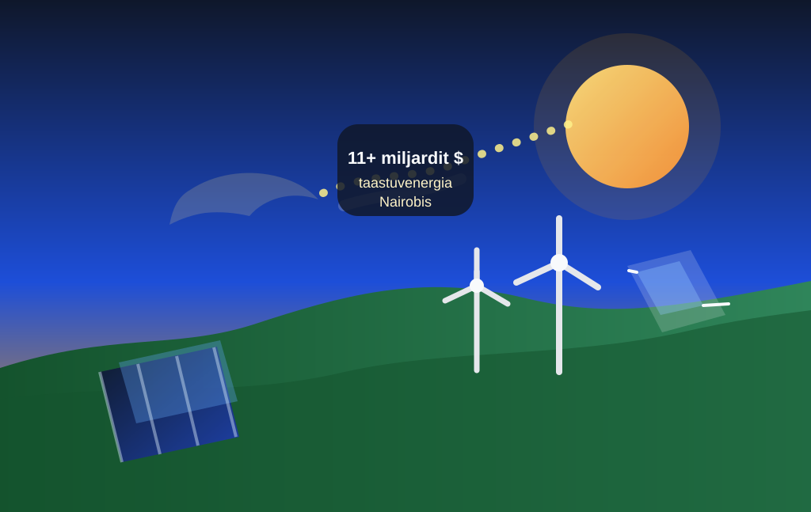

Nairobi lepingud annavad Aafrika puhtale energiale uue hoo

AP kirjutab, et Prantsuse ja Aafrika liidrid teatasid Nairobis enam kui 11 miljardi dollari suurusest taastuvenergia investeeringute paketist. Kui kliimapoliitika vahel liigub nagu roostes jalgratas, siis see samm vähemalt veereb.
Raha on suunatud päikesele, tuulele ja võrkudele — ehk täpselt neile igavatele detailidele, ilma milleta ei teki ühtegi päris energiasiiret. Suured lubadused on tore silt, aga liinid, seadmed ja rahastus teevad töö ära.
Märkimisväärne on see, et teema ei ole enam ainult heade kavatsuste esitlus. Kui investeeringud liiguvad, saab puhas energia Aafrikas olla samaaegselt kliimapoliitika, majanduspoliitika ja igapäevane elektriarve — mis on haruldane hetk, kus kõik kolm räägivad sama keelt.
Loe algallikat: AP News – "Africa secures major clean energy deals as France deepens investment push"
selle artikli sisu sõnastatud AI poolt: (mudel gpt-5.4-mini)